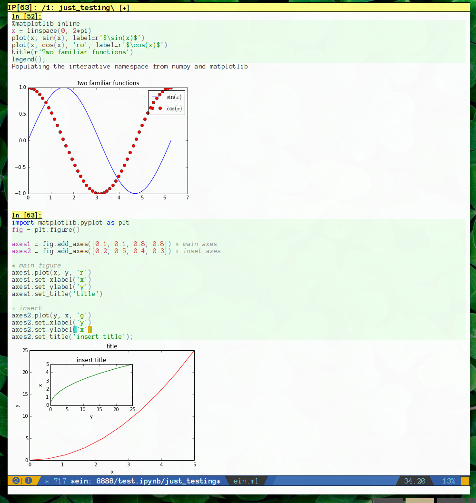
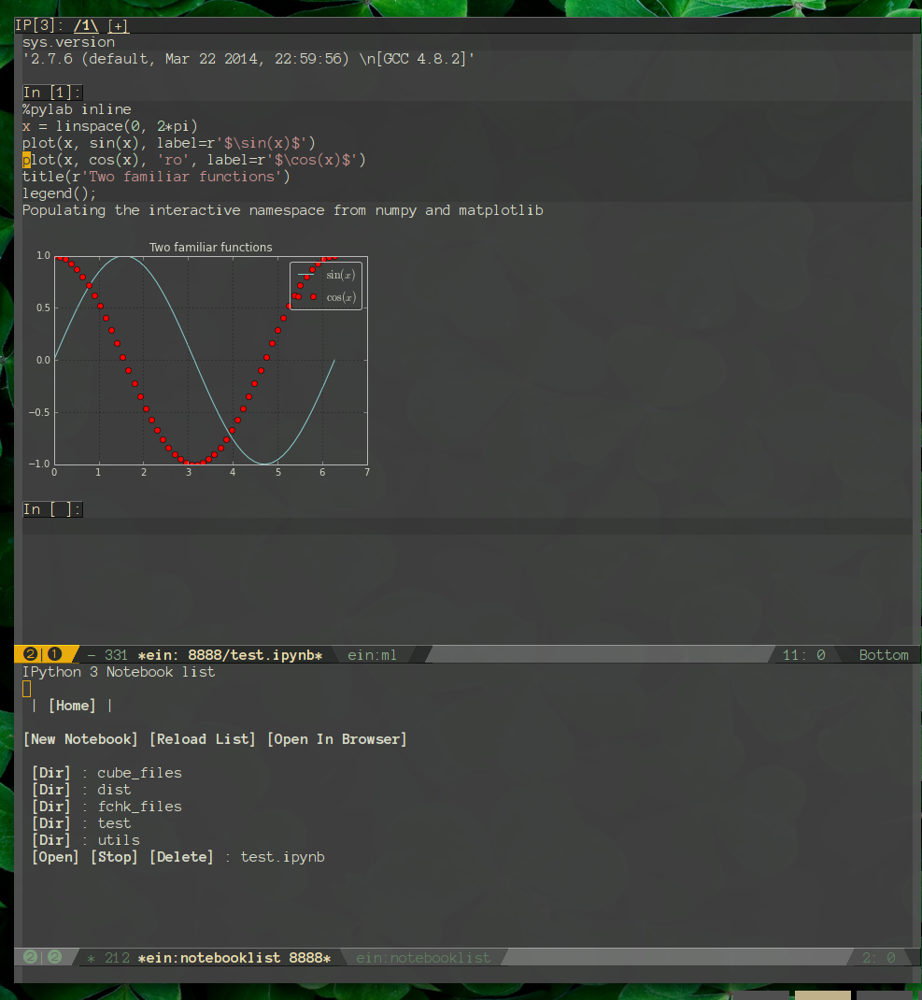

IPython Notebook contribution layer for Spacemacs (WIP)
Table of ContentsClose
1 Description
This layer adds support for the package emacs-ipython-notebook.
Do not hesitate to check the original package README here. Also the wiki has lots of informative stuff.
2 Features
- Keybindings available through micro-State or leader key
- Lazy-loading
3 List of TODOS
This is a WIP, feel free to collaborate.
3.1 TODO Maybe it'd be better if there was a state for this
3.2 TODO Make more keybinding to connect to a python buffer.
3.3 TODO Deleting visual regions don't work, find out why.
4 Install
4.1 Layer
(setq-default dotspacemacs-configuration-layers '(ipython-notebook))
4.2 Dependencies
Install IPython > 3
pip install ipython
4.3 What needs to be run
Have an IPython notebook running
ipython notebook
5 Using the IPython notebook
5.1 Open Notebook List
This layer is lazy loaded so the micro-state will only work after you summon the
command ein:notebooklist-open which is bound to SPC a i n
5.2 Key Bindings
The key bindings can be used through a micro state or the usual evil-leader.
5.2.1 Micro-state: ipython-notebook
Once you are in the ipython notebook you can activate the micro-state with
SPC e i n
The following table lists the keys. Use them as listed in the micro-state or
prefix with SPC m to use with your evil-leader.
| Key | Function |
|---|---|
h |
ein:notebook-worksheet-open-prev-or-last |
j |
ein:worksheet-goto-next-input |
k |
ein:worksheet-goto-prev-input |
l |
ein:notebook-worksheet-open-next-or-first |
H |
ein:notebook-worksheet-move-prev |
J |
ein:worksheet-move-cell-down |
K |
ein:worksheet-move-cell-up |
L |
ein:notebook-worksheet-move-next |
t |
ein:worksheet-toggle-output |
d |
ein:worksheet-kill-cell |
R |
ein:worksheet-rename-sheet |
y |
ein:worksheet-copy-cell |
p |
ein:worksheet-yank-cell |
i |
ein:worksheet-insert-cell-below |
I |
ein:worksheet-insert-cell-above |
u |
ein:worksheet-change-cell-type |
RET |
ein:worksheet-execute-cell-and-goto-next |
C-l |
ein:worksheet-clear-output |
C-S-l |
ein:worksheet-clear-all-output |
C-o |
ein:console-open |
C-k |
ein:worksheet-merge-cell |
C-j |
spacemacs/ein:worksheet-merge-cell-next |
C-s |
ein:notebook-save-notebook-command |
C-r |
ein:notebook-rename-command |
1 |
ein:notebook-worksheet-open-1th |
2 |
ein:notebook-worksheet-open-2th |
3 |
ein:notebook-worksheet-open-3th |
4 |
ein:notebook-worksheet-open-4th |
5 |
ein:notebook-worksheet-open-5th |
6 |
ein:notebook-worksheet-open-6th |
7 |
ein:notebook-worksheet-open-7th |
8 |
ein:notebook-worksheet-open-8th |
9 |
ein:notebook-worksheet-open-last |
+ |
ein:notebook-worksheet-insert-next |
- |
ein:notebook-worksheet-delete |
x |
ein:notebook-close |
5.2.2 Normal mode
In normal mode the following key bindings are defined:
| Key | Function |
|---|---|
gj |
ein:worksheet-goto-next-input |
gk |
ein:worksheet-goto-prev-input |
C-RET |
ein:worksheet-execute-cell |
S-RET |
ein:worksheet-execute-cell-and-goto-next |
Also SPC f s saves the notebook like you would a regular buffer.
5.2.3 Insert mode
In normal mode the following key bindings are defined:
| Key | Function |
|---|---|
C-RET |
ein:worksheet-execute-cell |
S-RET |
ein:worksheet-execute-cell-and-goto-next |
5.2.4 Traceback mode
In traceback mode the following key bindings are defined:
| key | Function |
|---|---|
RET |
ein:tb-jump-to-source-at-point-command |
n |
ein:tb-next-item |
p |
ein:tb-prev-item |
q |
bury-buffer |
6 Screenshots
6.1 Light

6.2 Dark

7 Bonus
If you want to have a matplotlibrc that looks good with a dark background try
using this matplotlibrc. Plot background is always transparent by default so
it will look okay for most dark themes out there.